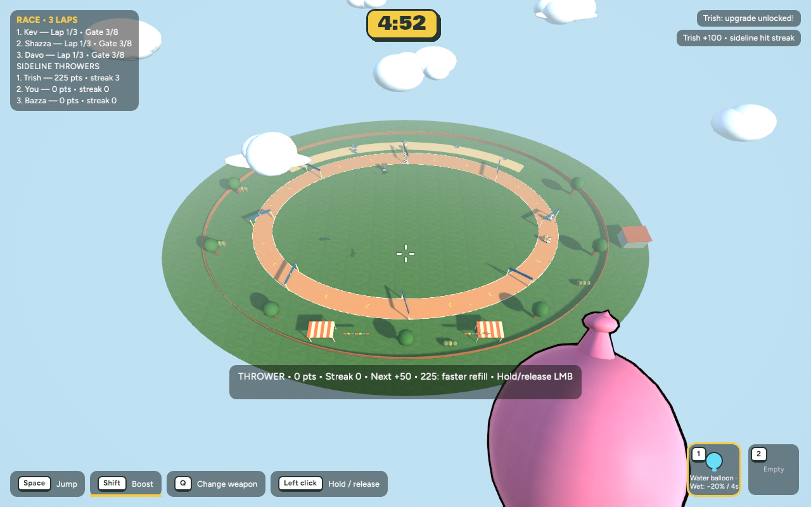
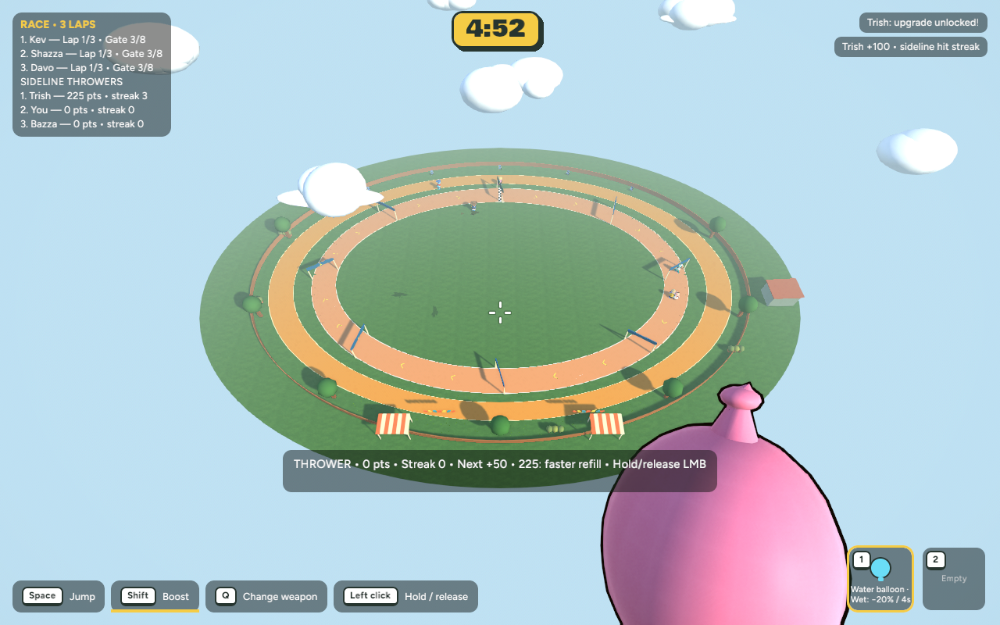

Full-lap Race sideline + visible head movement
Implemented game captures. Local review only; no commit, push or public release.
Recovery, rules and verification · Gaze design decision · Test the current private browser build
Race · same-camera comparison
The old starting-bend terrace is now a complete oval route with clear edges. Racers retain their own lane, checkpoints, grass penalties, supply rules and separate results. Nearby spectator props sit beyond the walking route.

Before — short starting terrace and restricted movement.
After — continuous spectator route around both bends and both straights.Clear final route · browser movement
The final build clears grass from the full walking strip while preserving the green gap beside the racing lane.
Full-lap verification
A genuine browser guest completed a clockwise lap, then the host completed the opposite direction. Keyboard and mouse input drove both checks. Logs contain sampled positions, movement bounds and travelled angles.
Guest full-lap log · Host full-lap log · Actual race and thrower results
Short guest movement excerpt. Gaze and this network movement recording precede the final grass-only route cleanup; all movement and networking code is the same.
Gaze · viewed from the other browser
Existing mouse controls now tilt the whole existing head-and-face group. Body turning still conveys left/right. Pitch is bounded, smoothed and cosmetic. Faces, hair, shirt names, shape settings, aiming and hitboxes keep their existing design and behaviour.
These are real peer-view captures. The received camera pitch exactly matched the sending player in all three poses. Reverse-direction host-to-guest pitch was also checked in Backyard; its magpies obscured that camera, so the clean Race images are presented here.
Sent/received pose readings · Turning and throwing
Performance and checks
| Matching setup | Before | After |
|---|
| Native average frame time, 600 intervals | 6.257 ms | 6.467 ms |
| Native 95th percentile | 7.225 ms | 7.508 ms |
| Browser average frame interval | 13.35 ms | 13.33 ms |
| Browser intervals over 33 ms | 0 | 0 |
| Native mesh entities | 7047 | 7034 |
Browser timing is refresh-limited at about 75 FPS, not a GPU timing measurement. Native view uses the same camera, scene, settings and 600-interval method. The completed oval is one mesh with no added textures. Gaze adds one byte to each existing 20 Hz player snapshot.
707 tests passed, one existing ignored test. Native release and browser release builds passed. Focused checks cover full-lap walking in both directions, boundary separation, far-bend scoring once through both host and guest request paths, pitch encoding, smoothing, stale-packet recovery, knockdown/Race replication and face-length pivot stability.
Testing
Select Race oval → Sideline Thrower to walk the full outer route. To see head movement, host and join using two copies of the private build. Existing public builds are unchanged.
cd /Users/marcus/Claude/australian-bbq/rust
~/.cargo/bin/cargo run -p bbq_app --release -- --menu